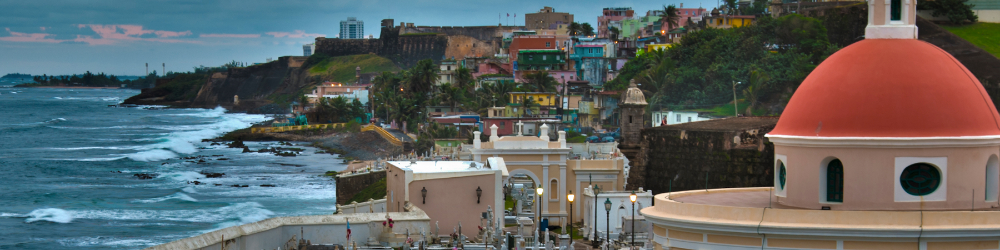

Bienvenido a la Pagina de Puerto Rico!
Bienvenido a la Pagina de Puerto Rico! 
This island is located in the carribean near the Dominican Republic and Haiti. Puerto Rico is a beautiful place to go for a future relaxation retreat. You can leasure by the beach while drinking a piña colada or go to a near by restarurant. As Puerto Rico is a commonwealth of the United States the american dollar is the currency. Although Spanish is he most spoken and native language, on the island many people do speak English.
Touristic Spots
Puerto Rico offers many touristic spots on the island. If you decide to go to San Juan you can visit the streats of the old san juan and look at the architecture structure. El Yunque National Forest. You can also visit one of the Biominescent Bay's located in Fajardo. You can go snorkelling with the sea turtles in Culebra.
Most Popular Cities
- San Juan
- Ponce
- Bayamón
- Carolina
- Mayagüez